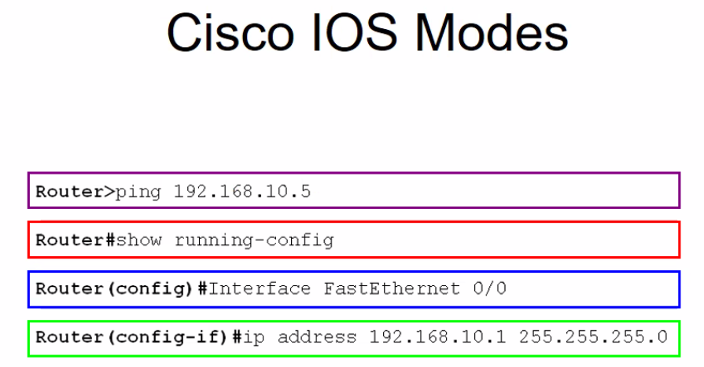

El promt permite conocer que modo de generalizacion estamos usando.

Prompt es un indicativo que señala en donde estamos.
Es un indicador de donde me encuentro yo operando en el sistema educativo. El sistema operativo esta organizado en diferentes estructuras.

Cada modo tiene sus proprios comandos.